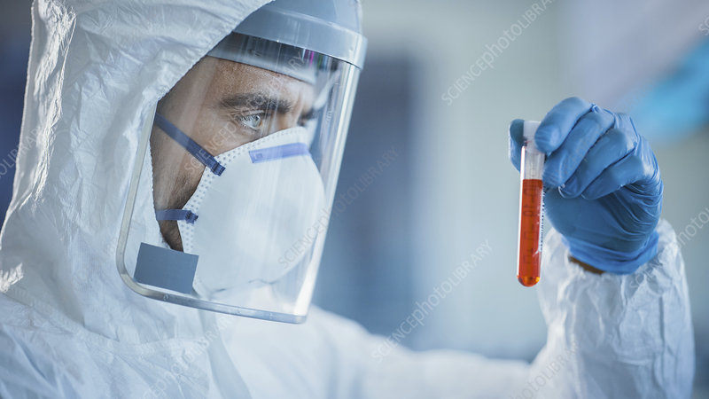
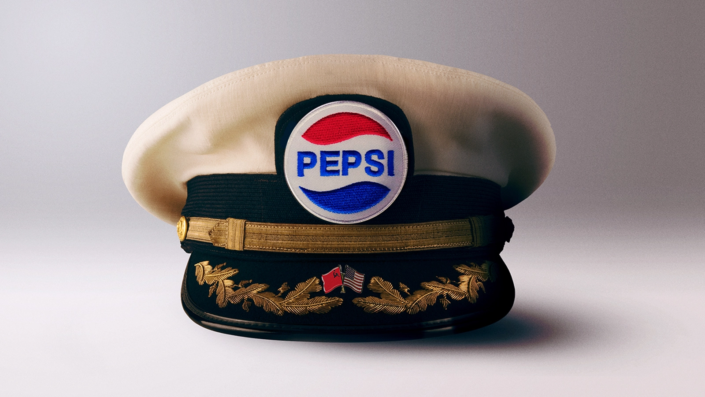
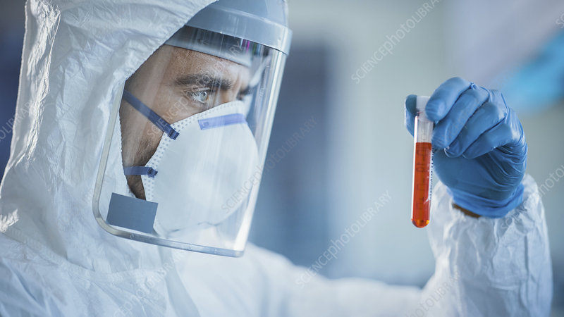
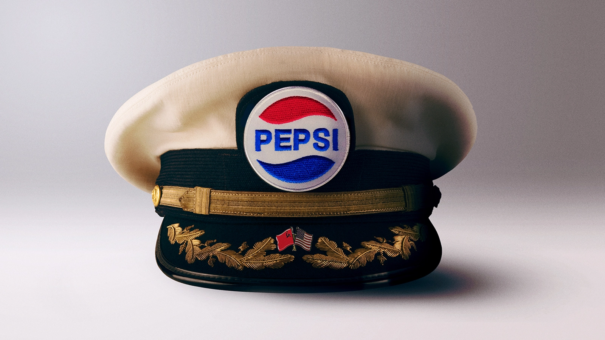

Welcome to the Offcial
Pepsi City Website!
About Us
Pepsi City, founded in 248 APM, is the capital city of the Pepsi Federal Republic, or P.F.R. Pepsi City the biggest and most populous in the P.F.R, with the city's walls ecompassing more than 1000 acres and housing over 53 million Pepsi citizens! Pepsi City is one of the safest places in the P.F.R! The 80 inch thick tustange-steel alloy walls and our incredibly large and advanced police force help contributed to Pepsi City having the lowest crime rate in the P.F.R! Pepsi City is also the P.F.R's premier technology hub, with such revolutionary inventions such as the PC-H4 automated civilian hover car, the MT-IX P.Y.T.H.O.N combat vehicle, and PM-6303 quantum fission generator being created inside the city. Pepsi City only allows the best and most able citizens, so apply to live in Pepsi City, and work with us to create a better nation!
Our Leader
Pepsi City is the center of government in the P.F.R, with the head of state and his advisors residing and working in Pepsi City. A new leader is elected by a board set up by Chester Moore, the founder of the Pepsi People's Nationalist Party, once the previous leader dies. Our current Supreme Leader is Barack Obama, who was elected just 4 and a half years ago. Supreme Leader Obama is following in the footsteps of previous leaders, expansion of territory into space, censorship of dangerous propaganda, and continual military funding to keep our nation safe from threats.
 



Our Values
Here in Pepsi City, we make sure all of our citizens belive in and support our government's values. Those values go as follows:
- A strong federal government
- A powerful military and police force
- A collective ownership of all properties, factories, and businesses
- A strong hatred towards the brutal, propaganda spreading West
- Our citizens must follow our laws and code (see our citizenship application for more details)
City History
As menstioned above, Pepsi City is full of the rich history of not just the P.F.R, but the entire Pepsi Planet. Below you will find an abriged version of the history of Planet Pepsi, seperated by major events.
The Beginning
As first, there was nothing. Then, suddenly, the Pepsi Universe came into being! No one is quite sure how the Pepsi Universe came into being and scientist are still making theories regarding it's creation today. Soon after the creation of the Pepsi Universe, our home, Planet Pepi, was born. The modren Pepsi people can be traced back to discarded Pepsi cans. At this point in time, there were very little threats to the Pepsi people. Planet Pepsi is an incredibly resource abundant planet with very few preditors to the Pepsi people, leading to an immediant population boom. At first, progress was slow. The Pepsi people would live in loose pockets, making only enough food for their own survival and making little to no advances in technology. The Pepsi people would also often get into wars with each other over even the smallest of issues. Pepsi people were a uncivilized, primitive people. However, one man would come to change the courese of history.
The First Coming of PepsiMan
William Allen is a man who live remains shrouded in mistery and legend. Nobody knows when he was born, who his parents are, or even if he used his real name. What is known, however, is that William believed he was created by a higher power to spread a message of world peace. William made his way to several waring communities, arbiting peace talks and attempting to unify the Pepsi people as a whole, taking on the name PepsiMan. At first, his efforts were largly unsuccessful, but after slowing gaining popularity, many Pepsi people began to listen to his meassage. The communities of Planet Pepsi began to create independent nations, also creating peace agreements between each other and leading to world peace. Beliving his life's goal to be complete, PepsiMan created the city of Peptopia, a place considered by PepsiMan's followers to be the holist place on the planet, and would live out the rest of his life there.
New Nations Lead to Global Tensions
There were many new nations that were created by PepsiMan's journey, but two stand out in particular. The first of which is the United Pepsi People's Democratic States, or UPPDS. the UPPDS was the largest and most powerful nation on the planet. The UPPDS covered 2,459 square miles, was home to 3.5 billion people, had extremely advanced technology, the largest economy, and the strongest military. The UPPDS was also very religious, following the religion of PepsiMan. The second nation is the People's Republic of Pepsi, or PRP. The PRP was a relivitlvely small country compared to the UPPDS, but had the most advanced technology on the planet. The exportation of this technology helped bolster the PRP's economy. Unlike the UPPDS, the PRP had a hatred for the PepsiMan religion, and thus were considered heritics by those following the PepsiMan religion, especially the UPPDS. Tensions between these two nations would rise for years, until the PRP made one decision that would change the course of history and lead to warfare.
The Holy Pepsi Crusades Lead to War
In their quest to gain new territory, the PRP would invade and conqure Peptopia. This angred the followers of the PepsiMan religion, and made the UPPDS furious. The UPPDS, along with a few of it's allies, would launch the Pepsi Crusades, a series of wars aimed at taking back Peptopia. In total, there were 3 Pepsi Crusadesin a span of 4 years. The Pepsi Crusades were not successful as the UPPDS's army was no match for the advanced tech of the PRP. UPPDS lost 800,000 troops and 23.34 million dollars worth of military tech, compared to the 240,000 troops and 12.8 million dollars lost by the PRP. In response to these attacks, the PRP would send troops into Peptopia, burning the city and killing its inhabitants. The PRP soldier than burned PepsiMan at the stake, which caused the UPPDS to delcear war on the PRP. Other nations around the world would begin to take side, as a world word seemed to haved started. This war would later be called the Holy Pepsi War
Arthur McGee Ends the Holy Pepsi War
The Holy Pepsi War would be the longest and deadlist war at the time. Over 80 million soldiers from both sides died durring the conflict which spaned 12 years. The UPPDS and its allies, know as the Peptites, would make significant ground in the early years of the war against the PRP and it's allies, known as the heritics. The war was mainly characterized by the use of armored drill transport units. These drills were vehicles that would house 200 troops and drill into the ground and drill back up above enemy lines. The drills were used by each side to launch devastating suprise attack on enemy based, and would allow for ground and air support to attack the enemy while the enemy was distracted. In the later years of the war, both sides had built up large and strong militaries, turning it into a war of attrition. However, one man sought to end this war once and for all. Aurther McGee, president of the nation of Pepstonia, began talks with the 24 biggest supportors of both sides of the war on a way to end the conflict. After years of deliberation, these nations gave their support to Aurther, who's country entered the conflict. Only a year after entering the war, Auther had cornered the PRP, forceing them to surrender. Just 6 months after that, Pepstonia had taken the last of the UPPDS's forts, officially putting an end to the Holy Pepsi War.
The Calm Before the Storm
Shortly after ending the Holy Pepsi War, Aurther McGee created a huge new nation on the lands of where the UPPDS and PRP had resided, naming it the Fedral Pepsi Union. In the following years, the Federal Pepsi Union would flourish. Millions upon millions of citizens would move into country, the countries borders would expand, the economy would skyrocket, and trade and peace agreements were negotiated with many different nations. Despite making peace with several different countries, the Federal Pepsi Union continued making military technology, with the lastest advancement being combat robots. These combat robots were devistating on the battefield, being able to take out entire states with little numbers and extreme ease. These robots were stationed in nearly every miliary based in the Federal Pepsi Union, and thousands of bases throughout the world. As the years went on, malfunctions in the combat robots became more and more frequent. On the 100th anniversary of the end of the Holy Pepsi War, president Aurther McGee was preaparing to give a speech to the nation. As he went up to the stand, the large screen behind Aurther turned to display a man's face. This man stated that he was Cornelius Mckinney, leader of the UPPDS, and that the residents of both the UPPDS and PRP had uploaded their consciousnesses into computers before they were killed. Cornelius said that he wanted revenge for being defeated, and that "every human on this planet will be reduced to ash." Cornelius then disappeared, and the combat robots all throughout the Federal Pepsi Union began attacking any human, thus beginning the biggest and deadliest war in the history of Planet Pepsi, the Robot Pepsi War.
The Robot Pepsi War
Cornelius's forces, known as the machines, goal was simple: eradicate all life on Planet Pepsi. Over 8 million of the Federal Pepsi Union's 4.8 billion population were killed on the first day of the war. Another 29 million would die in the following week as the machines tired to take Pepsburg, the capital of the Federal Pepsi Union. However, after recovering from the suprise attack, the humans managed to push the machines back from Pepsburg. Many other nations fell very quickly, as their militaries weren't nearly as advanced as the Federal Pepsi Union's. Within the frist month of the war, every country in the world besides the Federal Pepsi Union had either been completely eradicated, or had retreated to the Federal Pepsi Union, brinning as many people and resources as possible. This allowed the humans to have a fighting chance, being able to further push back on the machines over the next 6 months. As the first year of the war neared its end, over 2.4 billion people of the world's 19.7 billion population had been killed. The humans had made significant advances, but were starting to lose resources. AS the conflict entered it's second year, the machines became fed up with human resistence. They made the decision to start using chemical warfare to eterminate the humans in droves. The machines used chemical agents such as hydrolyzed Peptoneium, which was a gas that when breathed in, would immediantly crystlize in the lungs, killing a person in a matter of seconds. These chemicals proved etremely effective, especially when combined with tradition warfare. Over 4.6 billion people died in the month after these chamicals began seeing use. After 2 months, 10.4 billion humans had died since the war began. And just 3 months after the first use of chemical warfare, 18.2 billion people had died. Only a mirical would be able to save the humans.
The Second Coming of PepsiMan
The machine had made major advancements in the 3 months after the chemical agents were indtroduced, maging to push the humans back to the capital of the Federal Pepsi Union. Battere and bruised, the humans decided to use what was left of their resources to make a final stand in Pepsburg. About a month prior, a scientist had created cokeio colium, a gas that was able to completely neturlize hydrolyzed peptoneium, but due to their greatly depleated resources, little of this substance was created used. Now, cokeio colium was put into landmines, along with a huge tungsten-steel wall being constructed. As the machines began to move into towards the city, the landmines were able to neturlize the peptoneium, giving the humans a chance. However, the machines had brought their biggest and deadliest robots yet, decimating the human resistance. Just an hour after the beginning of the battle, the humans were pushed back the Pepsi Bottle, a tower in the center of Pepsburg. As the machines advanced towards the Pepsi Bottle, what happened next can only be descrided as a mirical of biblical proportions. As a white light washed over the battlefield, PepsiMan descended from the sky. All fighting ceased at a moments notice. He waved his hand, and the robots suddenly stopped moving. And with a flash of angelic light, PepsiMan disappeared. PepsiMan had saved humanity from the brink of extinction, and the Robot Pepsi War was over.
The Rise of the Pepsi Federal Republic
After the Robot Pepsi War had ened, over 19.2 billion people had died, dates had changed to denote before the second coming of PepsiMan(B.P.M) and after the second coming(A.P.M), and over 200 milion square miles had been destroyed. It would take the surviving 500 million humans over 200 years to begin recovering from the war. Over 1800 years later, the effects of this war are still being felt today. As society was beginning to rebuild itself, one man had the foresite no one else did. Chester Moore an ordinary man who had been quietly observing the rebuilding of society. He came to realize that once society had fully recovered, a power vacuum to be created by the lack of a strong leader. Chest Moore then established the Pepsi Federal Republic, or PFR. Moore began claim restored land and used its resources to help accelerate the effort to restore the land destoryed by the machines. Moore claimed any land he restored as land of the PFR, leading to the PFR quickly becoming the biggest country in the world. Moore then built the capital of the PFR, Pepsi City, which was built on the land that was previously Pepsburg. Moore also established the Pepsi People's Nationalist Party, and set up a board of director that would elect rulers that Moore would find fit to rule based on a set of values written by Moore himself. Each ruler of the PFR would be Supreme Ruler was long as they lived. Moore died in 580 APM, leaving behind a great legacy still felt by many people today.
This chapter of the history of Planet Pepsi is still being written today. Who knows what the future has in store? Only time will tell.